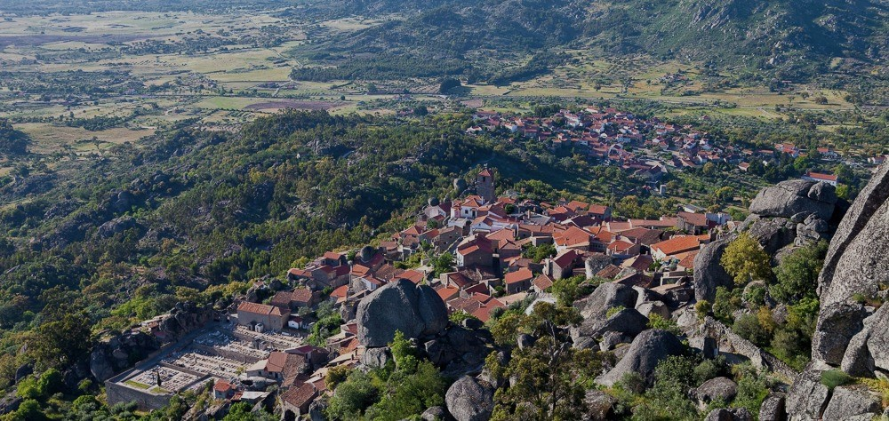
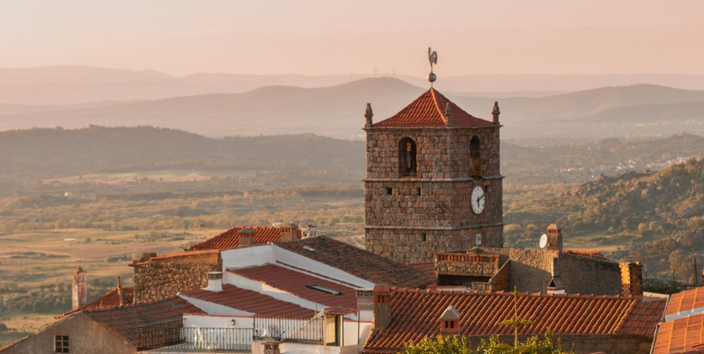
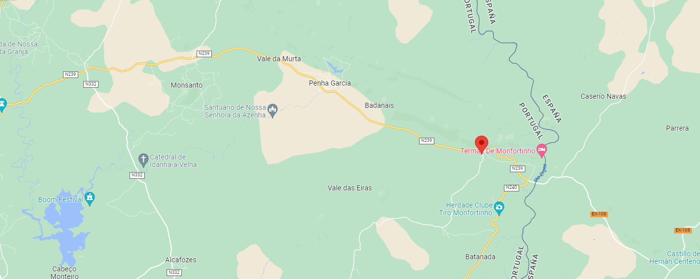

Rota das Águas
Mofortinho e
Idanha-a-nova
PASSEIOS DE DOMINGO
Sexta, sábado e domingo, 21, 22 e 23 de Outubro de 2022

LOCAL DE
ENCONTRO
Entrecampos (em
frente ao edíficio
da CML -
Campo Grande, 25)
HORÁRIO E
DURAÇÃO
Horário: 8h e
Duração de 3 dias
Guia
Helena Gonçalves
Pinto

Na margem direita do rio Erges,
capturam-se até 600 metros de
profundidade, as águas de Monfortinho,
que conjugam os fatores naturais,
evidenciando as propriedades
químicas, particularmente a sílica, que
ajuda a tratar a regeneração da pele, e
a contribuir para a harmonia do
Homem e a natureza.
No decurso do passeio, iremos visitar algumas das Aldeias Históricas que,
pelas particularidades arquitetónicas, paisagísticas e de boas práticas
de restauro e sustentabilidade, receberam o reconhecimento internacional
Biosphere Destination.
